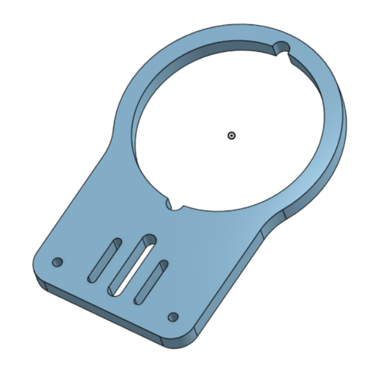
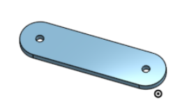

Installation
Hardware Setup
Steps followed to install the robot hardware
Base Plate
Fix Base Plate to a table. An optical table with 1 inch hole grid is used. Base Plate required modification by drilling into one of the slots to make the base plate fastening points align with the holes on the optical table.
Robot Arm
Robot base is mounted to the base plate with provided bolts.
Electrical Connections
There are 2 wired connections made from the robot base. Connectors are part of the included hardware. Connectors are for robot power and robot signal which go connect the robot arm to the robot controller. Connectors need to be plugged in, then tightened.
The connecting wires from the robot arm connect to the robot controller. the connection mechanism is identical to the connections on the robot base. The port on the controller labeled Enabling switch will be left disconnected at the end of successful connection of cables.
Network Connection
A Ethernet connection is made from the robot controller to a computer. The computer will act as the control interface for the robot operator.
Power
Once connections are checked, the controller is connected to mains power and the switch on the controller box is turened on. It takes 30 seconds to initialize and establish network connection with a computer.
Gripper
Install the gripper later. Look at the Gripper section for more information.
Software Setup
Network Configuration
The computer used to access the robot’s controller interface and the robot should be on the same local network. Configure the ethernet network interface of the computer to have the same network address as the robot. Initially the network address (192.168.1.xxx) should match the robot controller’s default addres. The robot’s network settings can be modified later. The robot controller’s default (out of the box) ip address is enscribed on the controller box.
If the computer’s ethernet adapter address is 10.0.0.10 and the robot controller’s address is 192.168.1.yyy the address of the ethernet adapter has to be changed to 192.168.1.xxx (where xxx != yyy). If this is the same network interface that is used for internet access, make contingency plans such as using wifi.
Robot Control Interface User Interface
The robot does come with a teach pendant. Operators control the robot using a graphical interface that is available through a browser page or a desktop application.
Browser Web Page: Connect to the robot interface in the browser by going to the robot’s IP address once the computer’s network interface is configured properly. Once the robot and computer are on the same network, this will work
Desktop Application: The desktop application, UFactory Studio can be downloaded from the UFactory company website. UFactory Studio works similarly to the browser web interface and has the same network requirements. The computer with UFactory Studio and the robot must be on the same local network to make a successful connnection and activate the user interface.
Open one of the controller interface options and set computer’s ip to same network as robot and assign a host address that is not the same as the robot’s - 192.168.1.221(robot), 192.168.1.220(pc). Connect to robot. Release robot estop, unlock robot in graphical interface and change the world (start by jogging the robot).
Additions
RealSense Camera Mount for UFactory xArm
A realsense camera (D415/D435) mount for the xArm was created based on a similar part available on roboshop.com. A second spacer model was added for a better fit necessitated by the choice of screws used in the installation.
The camera mount is installed between the robot wrist-3 link and end-effector. It can be installed without the gripper but would need alternate mounting screws
 {kind=link}
{kind=link}